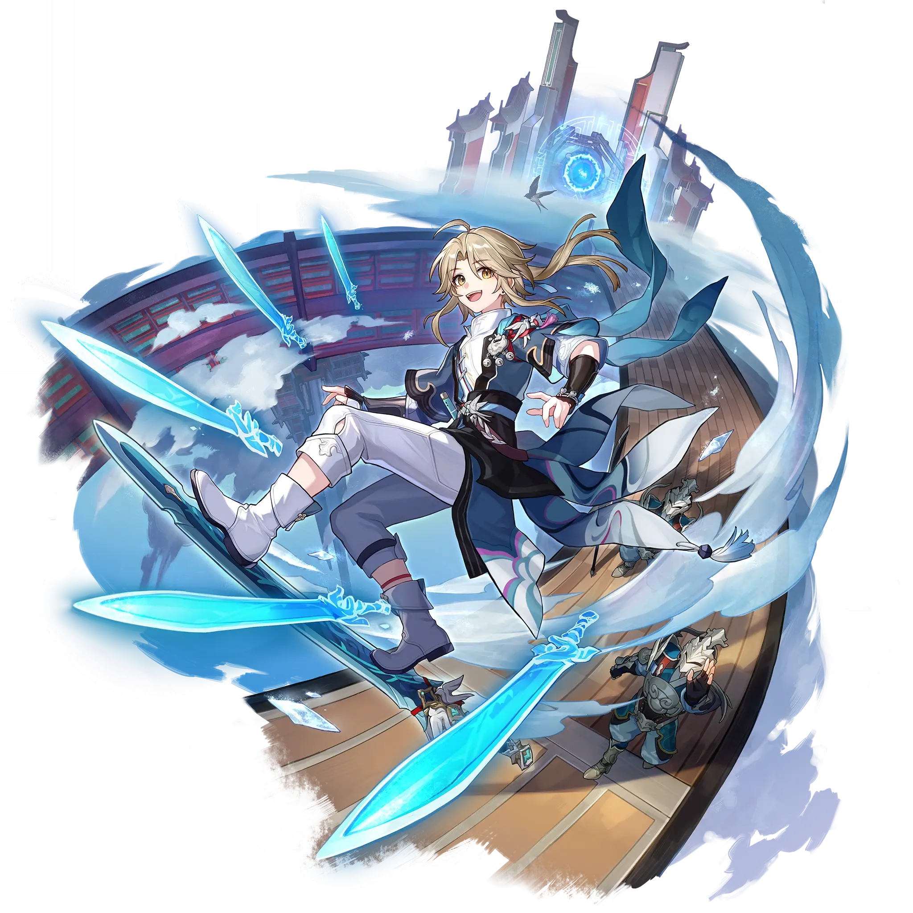

Yanqing
Best Yanqing build guide for Honkai Star Rail. See Yanqing's best Relics, Light Cones, teams, Eidolons, Trace priority, and how to play Yanqing.
🔍 Detail Skill
Semua skill aktif dan pasif beserta efeknya.
Deals Ice DMG equal to #1[i]% of Yanqing's ATK to a single enemy.
Deals Ice DMG equal to #1[i]% of Yanqing's ATK to a single enemy and activates Soulsteel Sync for 1 turn.
When Soulsteel Sync is active, Yanqing is less likely to be attacked by enemies. Yanqing's CRIT Rate increases by #1[i]% and his CRIT DMG increases by #2[i]%. After Yanqing attacks an enemy, there is a #3[i]% fixed chance to perform a follow-up attack, dealing Ice DMG equal to #4[i]% of Yanqing's ATK to the enemy, which has a #6[i]% base chance to Freeze the enemy for 1 turn. The Frozen target can
After using his Technique, at the start of the next battle, Yanqing deals #2[i]% more DMG for #3[i] turn(s) to enemies whose current HP is #1[i]% or higher.
⚔ Light Cone Terbaik
Diurutkan dari yang paling kuat. Persentase menunjukkan performa relatif terhadap pilihan terbaik.
💎 Relic Set Terbaik
Set terbaik untuk karakter ini, diurutkan berdasarkan prioritas.
📊 Stat Utama
Stat yang dicari pada tiap slot.
👥 Tim yang Direkomendasikan
Karakter yang sering dipasangkan bersama Yanqing.
 Aventurine
Aventurine
 Sunday
Sunday
 Yanqing
Yanqing
🔗 Lanjutkan
Build ini dirangkum dari Prydwen Institute. Starwise tidak menghitung sendiri. Angka bisa berubah setelah patch atau karakter baru rilis.